기계설계산업기사 (2007-03-04 기출문제)
1과목: 기계가공법 및 안전관리
1. 수직 밀링머신에서 가공물의 홈과 좁은 평면, 윤곽가공 구멍 가공 등에는 일반적으로 다음 중 어떤 절삭 공구를 주로 많이 사용하는가?
- 엔드밀
- 기어 커터
- 앵글 커터
- 총형 커터
(정답률: 74%)

2. 센터나 척을 사용하지 않고 일감의 바깥원통면을 연삭하는 센터리스 연삭기의 장점이 아닌 것은?
- 연속작업을 할 수 있어 대량 생산에 적합하다.
- 긴 축 재료의 연삭이 가능하다.
- 연삭여유가 작아도 된다.
- 대형 중량물도 연삭이 잘 된다.
(정답률: 60%)
3. 회전하는 상자에 공작물과 숫돌입자. 공작액, 컴파운드 등을 함께 넣어 공작물이 입자와 충돌하는 동안에 그 표면의 요철(凹凸)을 제거하여 매끈한 가공면을 얻는 것은?
- 숏피닝
- 슈퍼피니싱
- 버니싱
- 텀블링
(정답률: 29%)
4. 연삭숫돌의 연삭조건과 입도(grain size)의 관계를 옳게 표시한 것은?
- 연하고 연성이 있는 재료의 연삭:고운입도
- 다듬질 연삭 또는 공구의 연삭:고운입도
- 경도가 높고 메진 일감의 연삭:거친입도
- 숫돌과 일감의 접촉면이 작을 때:거친입도
(정답률: 46%)
5. 햄머 작업시 안전사항으로 적당하지 않은 것은?
- 장갑을 끼고 작업한다.
- 자기 체중에 비례해서 선택한다.
- 처음에는 서서히 타격을 가한다.
- 자기 역량에 맞는 것을 선택해서 사용한다.
(정답률: 43%)
6. 드릴 각부의 명칭에서 드릴의 홈을 따라서 만들어진 좁은 날이며, 드릴을 안내하는 역할을 하는 것은?
- 마진(margin)
- 랜드(land)
- 시닝(thinning)
- 탱(tang)
(정답률: 54%)
7. 호빙 머신의 이송에 대한 설명 중 맞는 것은?
- 테이블 1회전 할 동안의 호브의 회전수
- 호빙 머신의 효율
- 기어 소재의 1회전에 대하여 호브의 피드
- 호브 1회전에 대하여 기어의 전진 잇수
(정답률: 36%)
8. 드릴의 속도V(m/min), 지름d(mm)일 때, 드릴의 회전수 n(rpm)을 구하는 식은?
- n=1000/(πdV)
- n=(πdV)/1000
- n=(1000 V)/(πd)
- n=(πd)/(1000 V)
(정답률: 57%)
9. 삼침법에 의해 수나사의 유효지름을 측정할 때, 사용되는 마이크로 미터는?
- 포인트 마이크로 미터
- 외측 마이크로 미터
- V-앤빌 마이크로 미터
- 그루브 마이크로 미터
(정답률: 46%)
10. 다음 중 급속 귀환장치가 있는 기계는?
- 세이퍼
- 지그보링머신
- 밀링
- 호빙머신
(정답률: 59%)
11. 밀링가공 작업중에 갑자기 정전되었을 때, 안전사항으로 가장 거리가 먼 것은?
- 절삭공구는 공작물에서 떼어 놓는다.
- 기계에 부착된 스위치를 즉시 끈다.
- 경우에 따라 메인(main) 스위치도 끈다.
- 측정기를 정리한다.
(정답률: 74%)
12. 모(毛), 면직물, 펠트 등을 여러 장 겹쳐서 적당한 두께의 원판을 만든 다음 이것을 회전시키고 여기에 미세한 연삭입자가 혼합된 윤활제를 사용하여 공작물의 표면을 매끈하고 광택나게 하는 것은?
- 프레싱 가공
- 버핑
- 배럴가공
- 롤링
(정답률: 56%)
13. 센터리스 연삭기에서 통과이송법으로 가공시 조정숫돌바퀴의 바깥 지름이 400mm, 조정 숫돌바퀴의 회전수가 30rpm, 경사각이 4°일 때, 가공물의 이송 속도는 약 몇 m/mim인가?
- 0.18
- 2.63
- 11.79
- 37.61
(정답률: 31%)
14. 선반작업 안전수칙으로 틀린 것은?
- 회전하는 공작물을 공구로 정지시킨다.
- 바이트는 가능한 짧고 단단하게 고정한다.
- 장갑, 반지 등은 착용하지 않도록 한다.
- 선반에서 드릴작업시 구멍이 거의 끝날 때에는 이송을 천천히 한다.
(정답률: 80%)
15. 대형의 공작물이나 불규칙한 가공물을 가공하기 편리하도록 척을 지면 위에 수직으로 설치하여 가공물의 장착이나 탈착이 편리하며 공구이송방향이 보통선반과 다른 선반은?
- 차륜선반
- 수직선반
- 공구선반
- 모방선반
(정답률: 71%)
16. 삼각함수에 의하여 각도를 길이로 계산하여 간접적으로 각도를 구하는 방법으로 블록 게이지와 함께 사용하여 구하는 측정기는?
- 오토콜리메이터
- 탄젠트 바
- 베벨프로트랙터
- 콤비네이션 세트
(정답률: 42%)
17. 선반에서 맨드릴(mandreal)을 사용하는 가장 큰 이유는?
- 구멍 가공만이 꼭 필요하기 때문
- 구멍이 있는 공작물에 센터작업이 필요하기 때문
- 구멍과 외경이 동심원이고 직각단면이 필요하기 때문
- 척에 공작물을 고정하기 어렵기 때문
(정답률: 27%)
18. 절삭공구 재료의 구비조건으로 틀린 것은?
- 고온경도가 낮아야 한다.
- 내마멸성 및 강인성이 필요하다.
- 공구와 칩 사이의 마찰계수가 작아야 한다.
- 성형이 용이하고 가격이 저렴해야 한다.
(정답률: 66%)
19. 선반바이트를 구조에 따라 분류할 때 생크에서 날(인선)부분에만 초경합금이나 용접이 가능한 바이트용 재질을 용접하여 사용하는 것은?
- 팁 바이트
- 세라믹 바이트
- 단체 바이트
- 클램프 바이트
(정답률: 45%)
20. 총형커터에 의한 방법으로 치형을 절삭할 때 사용하는 밀링커터는?
- 헬리컬 밀링커터
- 하이포이드 밀링커터
- 인벌류우트 밀링커터
- 베벨 밀링커터
(정답률: 54%)
2과목: 기계제도
21. 기호의 종류 중 위치 공차를 나타내는 기호가 아닌 것은?
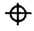
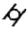
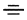
(정답률: 56%)
22. V-블록을 제3각법으로 정투상한 보기 도면에서 A부분의 치수는?
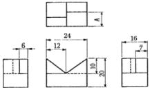
- 6
- 7
- 9
- 10
(정답률: 71%)
23. KS구격에서 나사의 표시 방법으로 좌 2줄 M 50×2-6 H로 표시되었을 때 올바른 해독은?
- 나사산의 감긴 방향은 외나사이고 2줄 나사이다.
- 미터 보통 나사 M50, 2개가 필요하다.
- 수나사이고, 공차 등급은 6급, 공차위치는 H이다.
- 본문 기호 만으로는 암, 수나사를 구분하지 못한다.
(정답률: 60%)
24. 베어링의 호칭번호가 6026일 때 이 베어링의 안지름은?
- 6mm
- 60mm
- 26mm
- 130mm
(정답률: 60%)
25. 각각 다른 물체를 제3각법으로 투상하여 그린 투상도 중 틀린 부분이 없는 올바른 정투상도는?
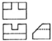
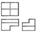
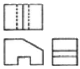
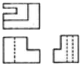
(정답률: 37%)
26. 표준 스퍼기어의 항목표에서는 기입되지 아니하나 헬리컬기어 항목표에는 반드시 기입되는 것은?
- 모듈
- 비틀림각
- 잇수
- 기준 피치원 지름
(정답률: 58%)
27. 상관체에서 두 입체가 만나는 경계선을 무엇이라 하는가?
- 분할선
- 입체선
- 직립선
- 상관선
(정답률: 65%)
28. 구멍의 최대 허용치수보다 축의 최소 허용치수가 큰 경우의 끼워 맞춤은?
- 억지 끼워맞춤
- 헐거운 끼워맞춤
- 틈새 끼워맞춤
- 중간 끼워맞춤
(정답률: 66%)
29. 파이프 상단 중앙에 드릴 구멍을 뚫은 보기와 같은 정면도를 보고 우측면도를 작성했을 때 다음 중 가장 적합한 것은?
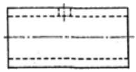
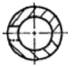
(정답률: 73%)
30. 가공 방법의 기호이다. 약호가 틀린 것은?
- 호닝 가공:GH
- 랩 다듬질:FL
- 스크레이퍼 다듬질:FS
- 줄 다듬질:FB
(정답률: 64%)
31. 도면 부품란에 재질이 KS 재효기호 GC250으포 표시된 재질 설명으로 가장 적합한 것은?
- 가단주철 인장강도 250N/mm2
- 가단주철 인장강도 250kgf/mm2
- 회주철 인장강도 250N/mm2
- 회주철 인장강도 250kgf/mm2
(정답률: 41%)
32. 스플릿 테이퍼 핀의 호칭법으로 맞는 것은?(오류 신고가 접수된 문제입니다. 반드시 정답과 해설을 확인하시기 바랍니다.)
- 명칭, 지름×길이, 재료, 지정사항
- 명칭, 등급, 지름×길이, 재료
- 명칭, 재료, 지름×길이, 등급
- 명칭, 종류, 지름×길이, 재료
(정답률: 20%)
33. 보기와 같은 T형강의 표시방법이 바르게 된 것은?
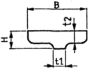
- T B×H×t1×t2-L
- T B×H×t1-t2-L
- T B×H-t2-t1-L
- T H-B×t2-t1-L
(정답률: 43%)
34. 나사의 종류를 표시하는 다음 기호 중에서 미터 사다리꼴 나사를 표시하는 것은?
- R
- M
- Tr
- UNC
(정답률: 72%)
35. 치수 기입법 중 현의 길이를 올바르게 표시한 것은?
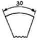
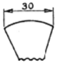
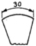
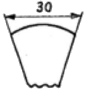
(정답률: 46%)
36. 가공 모양에 대한 기호를 올바르게 표시한 것은?
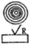
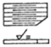
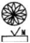
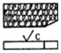
(정답률: 55%)
37. 그림과 같은 리벳작업을 공장 리벳을 하는 경우, 도면에 어떤 기호가 표시되어 있는가?
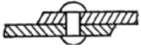
- ◎
- ○
- ●
- ◉
(정답률: 21%)
38. 보기 입체도에서 화살표 방향 투상도로 가장 적합한 것은?
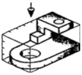
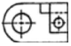
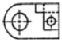
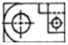
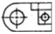
(정답률: 69%)
39. 단면의 무게 중심을 연결한 선을 표시할 때 사용하는 선은?
- 굵은 실선
- 가는 일점쇄선
- 가는 파선
- 가는 이점쇄선
(정답률: 26%)
40. 기계 구조물의 용접부분에 비파괴 탐상 시험기호가 PT로 표시되는 시험인 것은?
- 와전류 탐상시험
- 초음파 탐상시험
- 침투 탐상시험
- 자분 탐상시험
(정답률: 41%)
3과목: 기계설계 및 기계재료
41. 다음 중 고속도강과 가장 관계가 먼 사항은?
- W-CR-V(18-4-1)계가 대표적이다.
- 500~600℃로 뜨임하면 급격한 연화(軟化)된다.
- W계와 Mo계 두 가지로 크게 나뉜다.
- 각종 공구용으로 이용된다.
(정답률: 53%)
42. 탄소강이 가열되어 200~300℃ 부근에서 상온일 때보다 인성이 저하되는 현상을 무엇이라고 하는가?
- 저온취성
- 고온취성
- 적열취성
- 청열취성
(정답률: 38%)
43. 배빗 메탈(babbit matal)의 주성분은?
- Sn-Sb-Cu
- Sn-Ni-Al
- Pb-Cu-Fe
- Pb-Mo-Zn
(정답률: 34%)
44. 고주파경화법의 설명으로 틀린 것은?
- 재료의 표면부위만 경화된다.
- 가열시간이 대단히 짧다.
- 표면의 탈탄 및 결정입자의 조대화가 거의 일어나지 않는다.
- 표면에 산화가 많이 일어난다.
(정답률: 44%)
45. 강과 주철은 어느 것을 기준으로 하여 구분하는가?
- 첨가 금속함유량
- 탄소함유량
- 금속조직 상태
- 열처리상태
(정답률: 72%)
46. 복합재료 중 FRP는 무엇을 말하는가?
- 섬유 강화 목재
- 섬유 강화 플라스틱
- 섬유 강화 금속
- 섬유 강화 세라믹
(정답률: 80%)
47. 다음 중에서 금속의 비중이 큰 순서로 올바르게 나열된 것은?
- 은＞금＞구리＞철
- 금＞은＞구리＞철
- 철＞구리＞금＞은
- 철＞구리＞은＞금
(정답률: 32%)
48. 재결정 온도보다 낮은 온도에서 가공하는 것을 무엇이라고 하는가?
- 고온가공
- 열간가공
- 냉간가공
- 성형가공
(정답률: 64%)
49. 스테인리스 강을 금속 조직학상으로 분류한 것이 아닌 것은?
- 오스테나이트계
- 시멘타이트계
- 마텐자이트계
- 페라이트계
(정답률: 25%)
50. 켈밋(Kelmet)은 Cu에 무엇을 첨가한 합금인가?
- Pb
- Sn
- Sb
- Zn
(정답률: 43%)
51. M18×2의 미터 가는 나사의 치수를 설명한 것으로 맞는 것은?
- 미터 가는 나사 유효지름 18mm, 산수 2
- 미터 가는 나사 유효지름 18mm, 피치 2mm
- 미터 가는 나사 바깥지름 18mm, 피치 2mm
- 미터 가는 나사 골지름 18mm, 2 줄나사
(정답률: 21%)
52. 키의 설계에서 전달동력 3kW, 회전수 300rpm, 축 지름 30mm, 키의 길이 40mm, 허용전단응력을 3kgf/mm2라 할 때 키의 폭은 약 얼마인가?
- 3mm
- 6mm
- 15mm
- 24mm
(정답률: 39%)
53. 그림과 같은 기어열에서 각각의 잇수가 ZA=16, Zb=60, Zc=12, Zd=64인 경우 A 기어가 있는 I 축이 1500rpm일 때 D 기어가 있는 Ⅲ축의 회전수는 얼마인가?
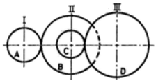
- 56 rpm
- 60 rpm
- 75 rpm
- 85 rpm
(정답률: 41%)
54. 회전수가 3000 rpm일 때 전달력이 5PS인 둥근축의 비틀림 모멘트는 약 몇 kgf-mm인가?
- 1089.6
- 1193.7
- 1449.5
- 1623.4
(정답률: 31%)
55. 성크 키(b×h×ℓ)를 지름 d인 전동 축에 사용할 때 키의 전단저항으로 코트를 전달한다고 하면 키의 폭(b)를 결정하는 식은? (단, 키와 축의 허용 전단 응력은 동일하고, 키의 높이는 h이고, 키의 길이는 ℓ=1.5d이다.)
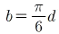
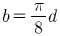
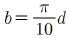
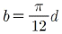
(정답률: 30%)
56. 계속하여 반복 작용하는 하중으로서 진폭이 일정하고 주기가 규칙적인 하중은?
- 변동하중
- 반복하중
- 교번하중
- 충격하중
(정답률: 57%)
57. 재료의 기준강도(인장강도)가 40kgf/mm2이고, 허용응력이 10kgf/mm2일 때 안전율은?
- 0.25
- 0.5
- 2
- 4
(정답률: 55%)
58. 일반적으로 60mm이하의 작은 축과 테이퍼 축에 사용될 때 키(key)가 자동적으로 축과 보스 사이에서 자리를 잡을 수 있는 장점을 가지고 있는 키는?
- 성크 키
- 반달 키
- 접선 키
- 스플라인
(정답률: 40%)
59. 모듈 2, 피치원 지름 60mm인 스퍼 기어의 잇수는?
- 30개
- 40개
- 50개
- 60개
(정답률: 70%)
60. 구조는 간단하나 복잡한 운동을 쉽게 실현할 수 있어, 내연 기관의 밸브 개폐기구나 공작 기계, 인쇄 기계, 자동 기계 등의 운동 변환 기구에 사용되는 것은?
- 마찰차
- 나사
- 키
- 캠
(정답률: 54%)
4과목: 컴퓨터응용설계
61. 중앙처리장치(CPU) 구성요소에서 컴퓨터 내부 장치간의 상호신호교환과 입ㆍ출력 장치 간의 신호를 전달하고 명령어를 수행하는 장치는?
- 기억장치
- 입력장치
- 제어장치
- 출력장치
(정답률: 66%)
62. CAD 시스템에서 곡선을 표시하는데 3차식을 사용하는 이유로 가장 적당한 것은?
- 곡면을 생성할 때 고차식에 비해 시간이 적게 걸린다.
- 4차로는 부드러운 곡선을 표현할 수 없기 때문이다.
- CAD 시스템은 3차 이상의 치수를 지원할 수 없다.
- 3차가 아니면 곡선의 변형이 안된다.
(정답률: 55%)
63. 직선
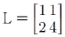
를 X방향으로 3만큼, Y방향으로 3만큼 이동한 값은?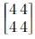
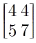
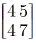
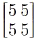
(정답률: 63%)
64. 실물에서 3차원 데이터를 측정하여 CAD모델로 만드는 작업을 무엇이라고 부르는가?
- 역공학(Reverse engineering
- Feature-based modeling
- Digital Mock-up
- Virtual Manufacturing
(정답률: 30%)
65. 다음과 같은 동차 좌표계에서 스케일링(scaling)과 관련이 있는 도형요소는?
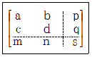
- a, d
- c, s
- m, n
- p, q
(정답률: 27%)
66. 다음 중 서피스 모델의 특징을 잘못 설명한 것은?
- 2개 면의 교선을 구할 수 있다.
- 복잡한 형상을 표현할 수 있다.
- NC 가공 정보를 얻을 수 있다.
- 은선 제거가 가능하다.
(정답률: 20%)
67. 다음 두 개의 직선 식이 있다. 이 두 식이 교차하는 점을 중심으로 하는 원의 방정식은?
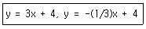
- x2+(y-4)2-9=0
- (x-3)2+(y-4)2=25
- y2+(x-4)2=9
- (y-3)2+(x-4)2-9=0
(정답률: 10%)
68. LAN 시스템 구성방식에서 망(topology) 접속형태에 의한 구분에 해당되지 않는 형은?
- 스타형
- 트리형
- 링형
- 다운로드형
(정답률: 57%)
69. CAD/CAM 시스템에서 사용하는 좌표계가 아닌 것은?
- 직교 좌표계
- 원통 좌표계
- 원추 좌표계
- 구면 좌표계
(정답률: 55%)
70. 지정된 모든 점을 통과하면서 부드럽게 연결이 필요한 자동차나 항공기 같은 자유곡선이나 곡면을 설계할 때 부드럽게 곡선을 그리기 위하여 사용되는 곡선은?
- 베지어 곡선
- 스플라인 곡선
- B-스플라인 곡선
- NURBS
(정답률: 54%)
71. 양궁 과녁과 같이 동심원으로 구성되는 형상을 만들려고 한다. 다음 중 가장 적절하게 사용될 수 있는 기능은?
- zoom
- move
- offset
- trim
(정답률: 70%)
72. 그림과 같이 병 모양의 곡면을 나타내는데 가장 적합한 곡면 모델링은?
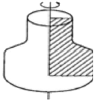
- 이동 곡면
- 회전 곡면
- 연결 곡면
- 투영 곡면
(정답률: 71%)
73. 솔리드모델링에서 기본형상의 불 연산방법이 아닌 것은?
- 합집합
- 차집합
- 곱집합
- 교집합
(정답률: 60%)
74. 공학적인 해석을 할 때 사용하는 여러 성질(무게, 부피, 무게중심, 관성모멘트 등)을 구할 수 있는 모델링으로 가장 적합한 것은?
- 2차원 와이어 프레임 모델링
- 솔리드 모델링
- 3차원 와이어 프레임 모델링
- 서피스 모델링
(정답률: 78%)
75. 디지털 이미지의 가장 작은 구성 단위는?
- 픽셀(pixel)
- 채널(channel)
- 매핑(mapping)
- 그라디언트(gradient)
(정답률: 80%)
76. 분산처리 CAD 시스템에 대한 장점으로 틀린 것은?
- 자료 처리 속도를 증가시킬 수 있다.
- 이미 구성된 자료들을 효율적으로 관리할 수 있다.
- 시스템 구성에 유연성을 가질 수 있다.
- 시스템의 신뢰성과 활용성을 높일 수 있다.
(정답률: 26%)
77. 서로 다른 CAD/CAM 시스템 사이에서 데이터를 상호교환하기 위한 데이터 교환 방식이 아닌 것은?
- IGES
- STEP
- DXF
- DWG
(정답률: 59%)
78. 와이어프레임 모델링의 기본요소가 아닌 것은?
- 곡선
- 직선
- 원호
- 면
(정답률: 54%)
79. CAD 시스템에서 입력장치가 아닌 것은?
- 라이트 펜
- 마우스
- 프린터
- 스캐너
(정답률: 77%)
80. 다음 기능 중 변환 행렬을 사용했을 때의 편리하과 무관한 기능은?
- 스케일링
- 회전
- 반사
- 복사
(정답률: 50%)